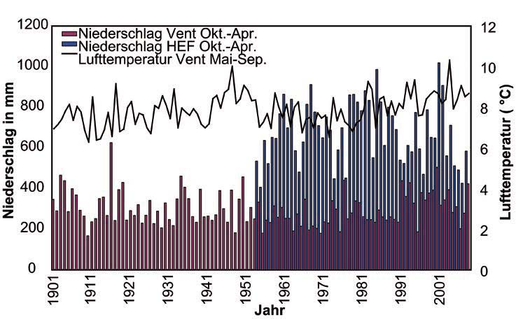

Map with: live webcam, weatherdata and route-recommendation wiht routefacts and elevationprofile:
Way-Category-Chart
About studyarea:
The study area is situated in the upper Rofental which is part of the Ötztal. Hintereisferner (HEF) is a typical valley glacier located on the northern side of the Austrian alps main ridge and part of the Ötztaler Ache river catchment. HEF is the main source of the Rofenache which is the headstream of the Ötztaler Ache (Gattermayer 2013: 110). The Ötztaler Ache drains into the Inn and is important for its water supply, especially in the summer months, when it releases water stored as snow and ice. The main glacier spreads from high elevation accumulation areas below the summit of Weißkugel (3739 m) through the valley in the north-eastern direction. The glacier covers an area of 6,39 km2 at a length of 6,5 km with an elevation ranging from 3720 m a.s.l to 2505 m a.s.l. at the end of the tongue in 2018 and is one of the biggest glaciers of Tyrol. In the hydrological year of 2017/18, the Equilibrium-line Altitude (ELA) of HEF was identified at 3500 m a.s.l. (Kaser & Juen 2018: B1). Today, the actual HEF area contains three different smaller glaciers that have been separated in the last decades. The situation today is shown in Figure 3. In this case study, Hintereisferner, Langtauferer Jochferner, and Stationsferner are treated as one glacier and named “Hintereisferner” (HEF). In 2018, Hintereisferner had an extent of 5 km2, Stationsferner 0,25 km2 and Langtauferer Jochferner 1 km2 (Klug 2019). The upper Ötztal including the Rofental is a so-called inner alpine dry valley. The distance to the fringe of the alps and shadowing caused by high mountains affect the precipitation that is low in the valley and increases with rising altitude (Kuhn et al. 1982). There are two meteorological research stations close to HEF. Vent, a village about 8 km west of the end of the glacier, and Hintereis Research Station, which is located on the opposite side of the Laser Scanner above the glaciers orographic left side, deliver data since 1905 (Vent) and Hintereis (1952) (Juen et al. 2017 a, b). Vent is situated in the valley at an elevation of 1895 m a.s.l. and has an average annual precipitation of 677 mm a-1 and an average air temperature of 1.5°C (1906-2011). The rain gauge at Hintereis is located at an elevation of 3026 m a.s.l. and has about twice the amount of precipitation compared to Vent (Klug et al. 2018: 834). The precipitation increases with rising elevation because of orographic effects caused by the terrain as displayed in figure 2 (Fischer & Hartl 2013: 39).